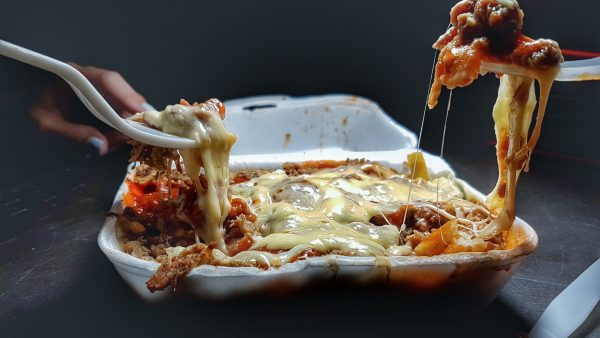

Yaroa

La yaroa, plato sabroso e increíble que procede de Santiago, y es una
recién llegada a la escena de la comida urbana en la República Dominicana.
Este es un plato que marca cada casilla de la lista de "mejores comidas de
la calle" y aquí te presento mi versión favorita.
Ingredients
-
24 oz 24 onzas papas, pelada y cortada en tiras 680 grs. aproximadamente
- 4 cda aceite de oliva 40 grs.
- ¾ cda de sal
- 1 cdta. de pimienta
- 1 cup de queso Mozzarella rallado
- 1 cup de queso Cheddar rallado
- ⅓ cup de Ketchup
- ¼ cup de mayonesa
- 1 cda. de ajo en polvo
- Carne
- papas fritas
Directions
-
Rocía las papas con el aceite de oliva, y añade la sal, así como la
pimienta y el ajo en polvo. Mezcla muy bien con la mano.
-
Calienta el horno a 175 ºC [350 ºF], o la freidora de aire a la
temperatura sugerida por el fabricante.
-
Colócalos en una bandeja de hornear y cuecelos en el horno precalentado
durante 25 minutos, o hasta que adquieran un ligero color dorado y estén
crujientes por los bordes.
-
Para la carne, calienta el aceite en una olla o sartén grande a fuego
medio. Añade las cebollas y cuece y remueve hasta que se vuelvan
transparentes. Añade el ajo y cuece removiendo durante un minuto.
- Añade la carne molida, cocina y remueve.
-
Vierte la salsa de tomate, añade pimiento, sal y pimienta negra. Remueve
y tapa. Cocina a fuego lento durante 3 minutos. Destapa y mezcla con los
plátanos fritos.
- Prueba y sazona con sal y pimienta al gusto. Retira del fuego.
-
Pon las papas en 4 platos. Cubre las papas con la carne caliente. Agrega
el queso mozzarella y el cheddar.
- Agrega mayonesa y ketchup al gusto.
- Disfruta